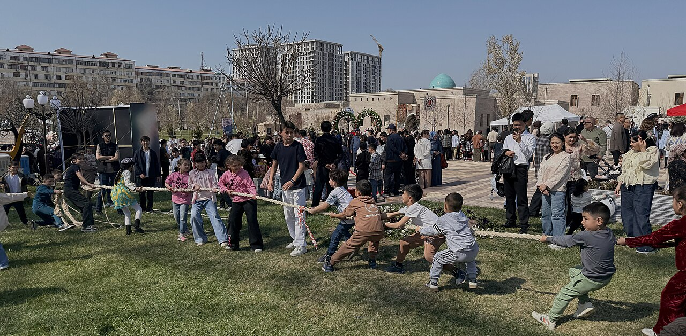
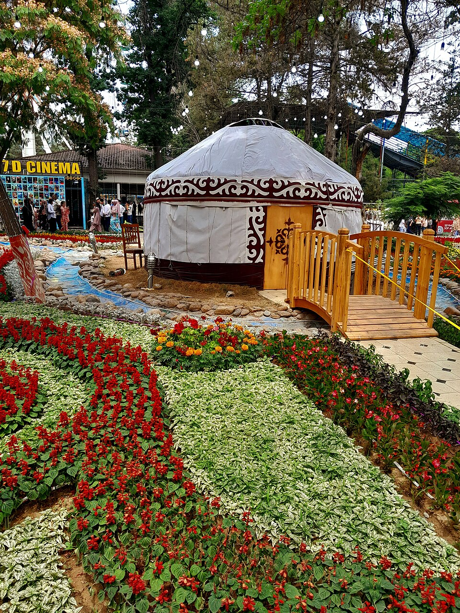
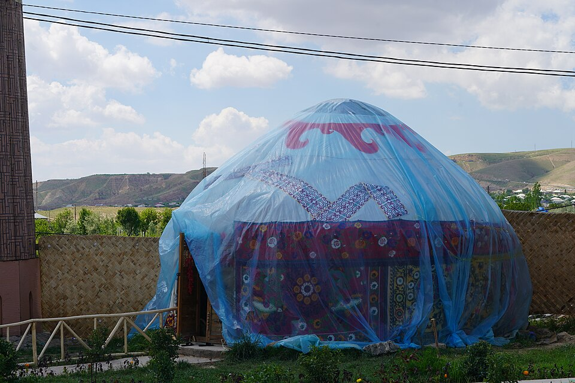
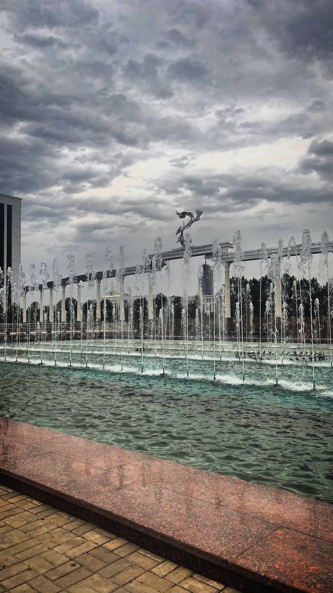

21 MARCH · SPRING FESTIVAL
ナウルーズ（春祭り）
春分のころに祝われる春の祭りです。家族や近所の人が集まり、音楽や踊りを楽しみ、春の訪れを祝います。
写真: Panpanchik, Wikimedia Commons · CC BY-SA 4.0人々が集まり、食事や音楽を楽しむ特別な日。

春分のころに祝われる春の祭りです。家族や近所の人が集まり、音楽や踊りを楽しみ、春の訪れを祝います。
写真: Panpanchik, Wikimedia Commons · CC BY-SA 4.0
街が花で彩られ、花のパレードや展示、音楽などを楽しむ春のイベントです。
写真: Miss Kamola / Wikimedia Commons · CC BY-SA 4.0
伝統音楽や踊り、民族衣装、民俗遊びを通して地域の文化を祝います。
写真: Iaa2023 / Wikimedia Commons · CC BY 4.0
9月1日はウズベキスタンの独立記念日です。首都タシュケントの独立広場は、国の歴史を思い起こす場所のひとつです。
写真: Ugiloy Boymatova, Wikimedia Commons · CC BY 4.0